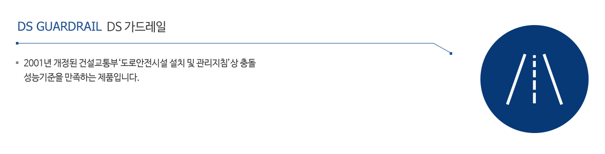
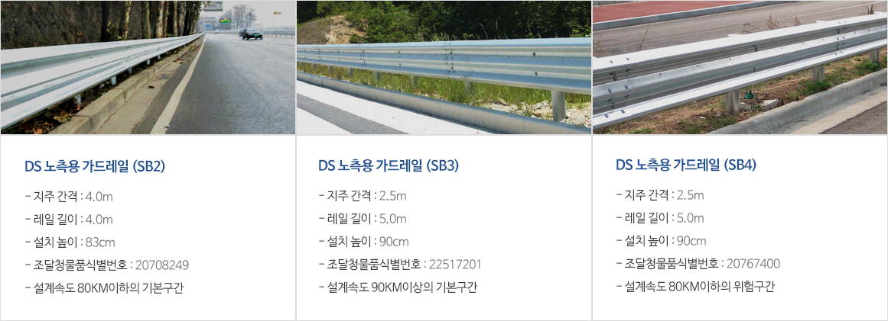
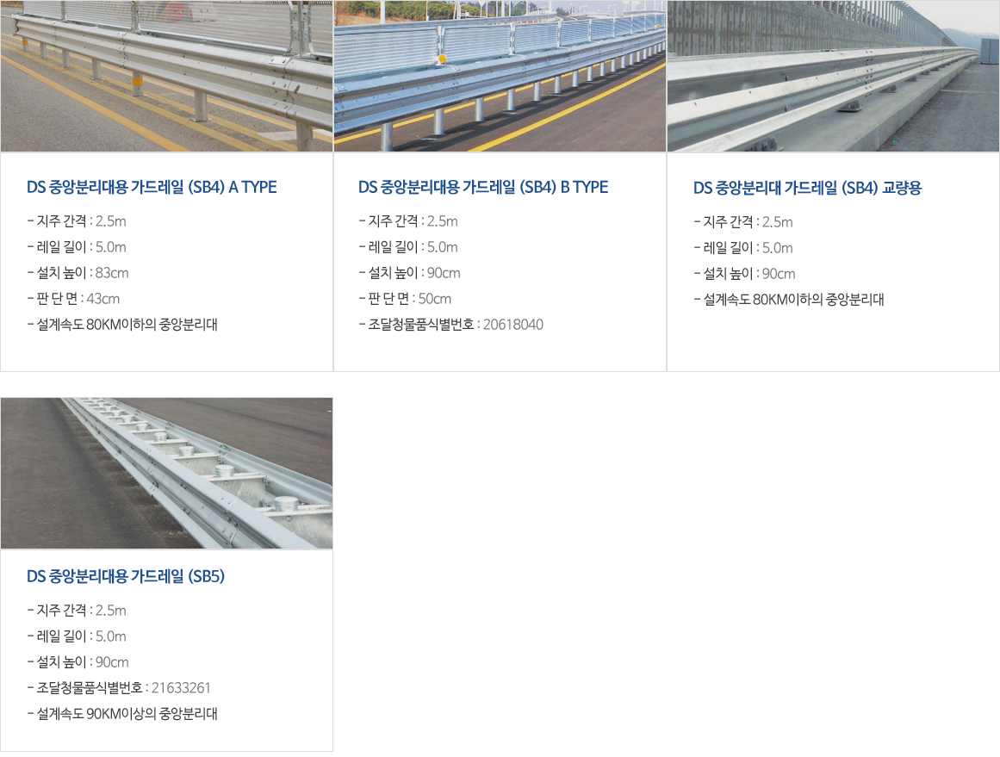

사업부문
도로안전

개요
본 기술은 서로 다른 단면 강성을 갖는 부재를 상하로 배치하여 볼트로 연결한 Thrie-Beam 형태의 이중보, 콘크리트로 내부가 보강된 원형 철재 지주, V형 놋치를 적용한 연결대로 구성된 차량 방호울타리 설치기술 로서, 2001년 개정된 건설교통부‘도로 안전시설 설치 및 관리지침’상 충돌 성능 기준을 만족하는 제품
특장점
대형차량에 대한 지지력을 극대화하고 소형 승용차 탑승자에 대한 안전도를 향상시키기 위하여 상부와 하부의 단면 강성을 차등화시킨 강성차등형 DS (Dual Strength) 레일의 단면 및 체결 구조
- - 상단과 하단 레일 두께를 달리하여 상단(4.8T)은 강하고 하단(2.5T, 3.0T)은 상대적으로 연성인 서로 다른 강성을 갖는 레일을 접합하여 일체화 되도록 사용함으로써 탑승 자의 위치가 낮은 소형차량 운전자의 시야를 확보하고 충돌 시 충격 흡수 성능을 강화하였으며, 상단 레일은 대형차량의 강한 충격력에 대응하여 승월을 억제하도록 하였다.
- - 상·하단 레일의 결합시 단면이 Thrie-Beam의 형태를 갖도록 설계하여 현재 설치된 구조물과 연속되는 미관이 되도록 하였으며, 상·하부 레일의 분리로 레일의 단위 중량이 감소되게 되어 현장 취급이 용이하게 됨에 따라 통상 4m 단위로 생산하던 가드레일 길이를 5m (4m)로 확대하여 구조물의 연속성과 시공성을 확보 할 수 있게 하였다. 또한 일부 소형차 충돌시 하단레일만 교체함으로써 경제성 측면 및 유지보수가 유리한 점도 강성차등형 레일의 개선 효과라고 할 수 있다.
철재 파이프의 내부를 콘크리트로 보강하여 국부좌굴을 막고 CompositeAction으로 휨 및 비틂강성을 크게 증대시킨 합성지주
- - 충돌차량의 대향차선 진입을 막고 과도한 변형으로 인한 2차 사고를 유발 하지 않기 위해서, 가요성 방호 울타리의 강도증대는 중요한 과제로서 가드 레일의 강성에 중요한 영향을 미치는 지주의 강도를 보강하기 위한 방법으로 원형지주 내부에 국부적으로 콘크리트를 타설하여 횡하중에 대한 휨강성을 2배 이상 증대 시키고 급격한 소성변형을 방지한다.
V놋치를 적용한 라운드형 연결대
- - 소형차 충돌시 V놋치부의 부분적인 파괴를 유도하여 충격력을 흡수한다.
- - 지주변형과 함께 V놋치부가 압착되며 레일을 수직으로 유지 시켜 방호울타리의 유효높이 감소를 막아 승월방지 효과가 크다.
- - Vertical stiffener 및 상하 플랜지를 형성시켜 수직방향의 휨강성을 증대시키는 구조로 개발하였다.
DS 가드레일
노측용

중앙분리대용

본사ㆍ공장 : 전남 화순군 동면 동농공길 26-2 | Tel : 061)370-2114 | Fax : 061)373-8195 | E-mail : dasco@dasco.kr

©2017 DASCO CO., LTD.